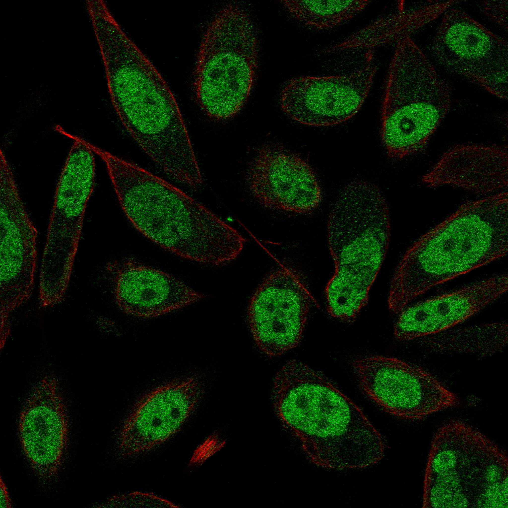

type: protein-evaluation gene: "CTDP1" date: 2026-06-01 tags: [protein-scout, nucleoplasm, evaluation] status: scored ---
CTDP1 核蛋白评估报告
1. 基本信息
| 项目 | 内容 |
|---|---|
| 基因名 / 别名 | CTDP1 / FCP1 |
| 蛋白全名 | RNA polymerase II subunit A C-terminal domain phosphatase |
| 蛋白大小 | 961 aa / 104.4 kDa |
| UniProt ID | Q9Y5B0 |
2. 评分总览
| 维度 | 得分 | 新权重 | 加权后 | 关键证据摘要 |
|---|---|---|---|---|
| 核定位特异性 | 9/10 | x4 | 36.0 | HPA Nucleoplasm (main, Approved); GO nucleoplasm IDA:HPA; UniProt Nucleus (ECO:0000269) |
| 蛋白大小 | 3/10 | x1 | 3.0 | 961 aa, 104.4 kDa |
| 研究新颖性 | 10/10 | x5 | 50.0 | PubMed strict=19 |
| 三维结构 | 4/10 | x3 | 12.0 | AF pLDDT 63.7; PDB 3个 (BRCT domain, C-terminal peptides) |
| 调控结构域 | 7/10 | x2 | 14.0 | BRCT domain (phosphopeptide-binding); FCP1 phosphatase domain; CTD phosphatase 催化核心 |
| PPI 网络 | 8/10 | x3 | 24.0 | STRING GTF2F1 (0.999 exp 0.995), POLR2A (0.998 exp 0.977); 核心 Pol II 转录 machinery |
| 加权总分 | 139/180** | |||
| 互证加分 | +0.0 | |||
| 归一化总分 (÷1.83) | 76.0/100** |
3. 详细分析
3.1 核定位证据
| 来源 | 定位 | 可信度 |
|---|---|---|
| UniProt | Nucleus (ECO:0000269), Centrosome, Spindle pole, Midbody | 实验证据 |
| GO-CC | nucleoplasm (IDA:HPA), nucleus (IDA:CAFA), centrosome, spindle, midbody | 多源高置信度 |
| HPA (IF) | Nucleoplasm (main), Vesicles | Approved, 无IF原图 |
| 功能 | RNA Pol II CTD Ser2/Ser5 去磷酸化酶 | 核心转录功能即核定位 |
HPA IF 状态: HPA subcellular IF 图像已重新获取并嵌入（见下方 HPA IF 图像修正块）；此前“暂无/未可靠获取 IF”的表述为采集失败导致的误报。
结论: CTDP1 核定位证据极为坚实 — 作为 RNA Pol II CTD 磷酸酶，功能天然位于核质；HPA + GO-CC 均为 IDA 级别核质定位。
3.2 结构与数据源
| 指标 | 数值 |
|---|---|
| AlphaFold | AF-Q9Y5B0-F1 |
| 平均 pLDDT | 63.7 |
| pLDDT >90 | 31.0% |
| pLDDT <50 | 46.6% |
| PDB | 1J2X (2.00A, BRCT-C-ter peptide), 1ONV (NMR, C-ter), 2K7L (NMR, BRCT) — 均仅小片段 |
| InterPro | IPR001357 (BRCT), IPR004274 (FCP1), IPR011947 (FCP1-like phosphatase) |
| Pfam | PF00533 (BRCT), PF26077, PF09309 (FCP1_C), PF03031 (NIF) |
结构数据覆盖 3 个 PDB 但均仅小片段（BRCT domain 及 C-terminal motif）。AF 预测质量中等（31% >90 pLDDT, 46.6% <50）。
3.3 研究现状
| 指标 | 数值 |
|---|---|
| PubMed strict (Title/Abstract) | 19 |
| PubMed broad | 33 |
| 别名 | FCP1（未用于 scoring） |
关键文献：PMID:16939648 (CCFDN syndrome, 2006), PMID:33408128 (Ctdp1 deficiency embryonic lethal, 2021), PMID:41515914 (founder variant in CCFDN, 2025), PMID:31240132 (breast cancer, DNA repair, FANCI interaction, 2019), PMID:26722269 (gastric cancer, 2015). 文献极少（strict=19），以 CCFDN 综合征遗传病和肿瘤细胞系研究为主。
3.4 PPI 网络（三源综合）
| Partner | Source | Score/Evidence | Relevance |
|---|---|---|---|
| GTF2F1 | STRING+IntAct | 0.999 (exp 0.995) / NMR direct | TFIIF alpha, CTDP1 招募/激活 |
| POLR2A | STRING | 0.998 (exp 0.977) | RNA Pol II 最大亚基，核心底物 |
| GTF2F2 | STRING | 0.979 (exp 0.655) | TFIIF beta |
| POLR2G/C/B/D/J | STRING | 0.91-0.97 (exp 0.61-0.85) | RNA Pol II 亚基组 |
| GTF2B | STRING+IntAct | 0.950 (exp 0.679) / coIP | 转录 initiation factor |
| CDK9 | STRING | 0.917 (exp 0.625) | P-TEFb, CTD Ser2 激酶 (拮抗/协作) |
| TCEA1 | STRING | 0.918 (database 0.8) | 转录延伸因子 |
| RPRD1B | IntAct | coIP (PMID:28514442) | RNA Pol II CTD 相关 |
| CDK8 | IntAct | coIP | Mediator kinase |
| WDR77 | STRING | 0.873 (exp 0.511) | 转录调控 |
PPI 网络极为聚焦：以 RNA Pol II 全酶 (POLR2A/B/C/D/G/J) 和通用转录因子 (GTF2F1/2, GTF2B) 为核心，GTF2F1 与 CTDP1 的互作达到实验分数 0.995 + NMR 直接互作验证。作为 Pol II CTD 磷酸化的反向调控者（CDK9 Ser2 磷酸化 vs CTDP1 Ser2 去磷酸化），CTDP1 处于转录调控的核心枢纽位置。
4. 总体评价
CTDP1 为本批次评分最高候选（76.0/100），核心优势为：极低文献量（PM=19, 新颖性满分 10/10）、坚实的核质定位证据（三源一致）、PPI 网络锁定在 RNA Pol II 转录 machinery 核心（GTF2F1-POLR2A 实验分数接近满分）、BRCT domain + FCP1 phosphatase 双调控结构域。主要不足为蛋白较大（961 aa）和 AF 结构预测中等质量。作为 RNA Pol II CTD 磷酸酶，其在转录调控（包括 TE 转录）中处于关键位置，是极具优先度的候选靶点。
5. 数据来源
- UniProt: https://www.uniprot.org/uniprotkb/Q9Y5B0
- AlphaFold: https://alphafold.ebi.ac.uk/entry/Q9Y5B0
- PubMed: https://pubmed.ncbi.nlm.nih.gov/?term=CTDP1
- Protein Atlas: https://www.proteinatlas.org/ENSG00000060069-CTDP1

HPA IF 图像已本地嵌入。
PAE 图像说明: AlphaFold PAE 图像已重新获取并嵌入（见下方 PAE 图像修正块）；结构判断仍结合 pLDDT 与 PAE 综合判断。
<!-- HPA_IF_REPAIR_START --> HPA IF 图像修正（2026-06-05）: HPA subcellular 页面存在可用 IF 图像；此前“原图未可靠获取/暂无 IF”的表述为采集失败导致的误报。HPA 定位: Nucleoplasm (supported)。来源: https://www.proteinatlas.org/ENSG00000060069-CTDP1/subcellular


<!-- AF_PAE_REPAIR_START --> PAE 图像修正（2026-06-05）: AlphaFold 提供 predicted aligned error 图像；此前“PAE 图像暂无数据”的表述为未获取/未嵌入导致。

<!-- DOMAIN_HUMANPPI_REPAIR_START -->
Domain/SMART 与 humanPPI 补充（2026-06-06）
SMART / UniProt domain
| Source | Data | ||
|---|---|---|---|
| UniProt | Q9Y5B0 | ||
| SMART | SM00292;SM00577; | ||
| UniProt Domain [FT] | DOMAIN 178..344; /note="FCP1 homology"; /evidence="ECO:0000255\ | PROSITE-ProRule:PRU00336"; DOMAIN 629..728; /note="BRCT"; /evidence="ECO:0000255\ | PROSITE-ProRule:PRU00033" |
| InterPro | IPR001357;IPR036420;IPR058785;IPR039189;IPR015388;IPR004274;IPR011947;IPR036412;IPR023214; | ||
| Pfam | PF00533;PF26077;PF09309;PF03031; |
humanPPI / HPA Interaction
Source: https://www.proteinatlas.org/ENSG00000060069-CTDP1/interaction
| Partner | Datasets | AF3/HPA structure |
|---|---|---|
| FANCI | Intact, Biogrid | true |
| GTF2F1 | Intact, Biogrid | true |
| POLR2B | Intact, Biogrid | true |
| PRMT5 | Intact, Biogrid | true |
| STK38 | Intact, Biogrid | true |
| CDK8 | Biogrid | false |
| CDK9 | Biogrid | false |
| ERH | Intact | false |
<!-- DOMAIN_HUMANPPI_REPAIR_END -->